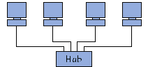

|  | In una topologia a stella, i computer della rete sono collegati ad un sistema hardware centrale detto concentratore (in inglese hub, letteralmente mezzo di ruota). Si tratta di una scatola che comprende un certo numero di collegamenti nei quali è possibile inserire i cavi di rete dei computer. Quest'ultimo ha come ruolo di assicurare la comunicazione tra i diversi collegamenti. Contrariamente alle reti costruite su una topologia in bus, le reti con una topologia a stella sono molto meno vulnerabili dato che una delle connessioni può essere scollegata senza paralizzare il resto della rete. Il punto nevralgico di questa rete è l'hub, dato che senza questo nessuna comunicazione fra i computer è possibile. D'altro canto, una rete in topologia a stella è più onerosa che una in bus dato che necessita di un hardware supplementare (l'hub). |
| home |